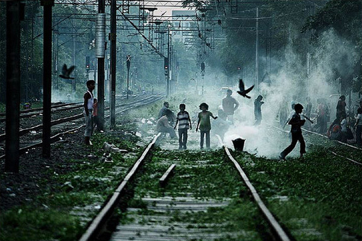

EVERY YEAR 100,000 CHILDREN
Take TO INDIAN RAILWAYS
TO RUN AWAY FROM HOME
Railway Children - a Kannada Feature Film by TinDrum Beats
Only THE LUCKY ONES RETURN...
owing to the little acts of kindness
that sprouts against all odds
Railway Children - a Kannada Feature Film by TinDrum Beats

amidst allurement, abuse and addiction
The rest become railway children
amidst allurement, abuse and addiction
trying to find themselves in a world
of crime deceit and escape
Railway Children - a Kannada Feature Film by TinDrum Beats